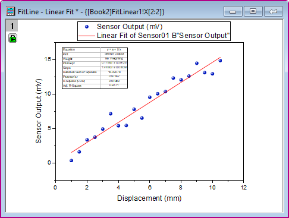

分析テンプレートの作成と利用
AnalysisTemplate-Create-Use
概要
繰り返しの作業は、分析テンプレートを作成することで単純化することができます。このようなテンプレートには、複数の分析結果やカスタムレポートシート含めることができます。テンプレートの新しいインスタンスをいつでも開くことができ、元データを変更すると、すべての分析結果とカスタムレポートが更新されます。
必要なOriginのバージョン: Origin 2015 SR0以降
学習する項目
- 分析テンプレート (OGWU)の作成方法
- 新しいデータで分析テンプレートを再利用する方法
ステップ
データのインポート
- 新しいワークブックを開き、一つめの空のワークシートをアクティブにします。ヘルプ: フォルダを開く: サンプルフォルダを選択して、サンプルフォルダを開きます。このフォルダ内のCurve FittingサブフォルダにあるSensor01.dat ファイルを探します。空のワークシートにファイルをドラッグアンドドロップしてインポートします。
- ワークシートタブをダブルクリックしてシート名Dataに変更します。
分析を実行する
- 列Bを選択し、解析：フィット：線形フィットメニューを選択し、線形フィットダイアログを開きます。
- 再計算を自動に変更し、他の設定はデフォルトのままOKボタンをクリックしてフィットを実行します。ブックに、結果表やグラフの埋め込まれたレポートシートが追加されます。
- 表示されたポップアップに「はい」とクリックし、FitLinear1レポートシートを開きます。
- フィット曲線のプロットの項目にあるグラフ上で、ダブルクリックしてグラフウィンドウを開きます。
- メニューから、表示：表示様式：レイヤ枠を選択してグラフに枠を表示します。
- 再スケールボタンをクリックします。

- メニューからフォーマット：軸スケール：X軸を選択して軸ダイアログを開きます。スケールタブで、主目盛のタイプが増分になっていることと、値が2になっていることを確認します。再スケールモードはドロップダウンから自動を選択します。
- 左側のパネルで、垂直アイコンをクリックします。再スケールモードを自動に設定します。また、主目盛のタイプを増分、値を5にします。OK をクリックして設定を適用し、ダイアログボックスを閉じます。
- 凡例オブジェクトを手動で動かし、結果のテーブルをグラフ上の適切な位置に配置します。この時点で、散布図のシンボルを編集するなどの操作を行うこともできます。最終的なグラフは下図のようになります。
- 
- グラフのタイトルバー右上にある、閉じるボタン をクリックして、グラフを結果シートに戻します。
分析テンプレートとして保存する
- ワークブックをアクティブにして、ファイル:ワークブックを分析テンプレートとして保存をクリックします。
- 目的の場所までブラウズし、ファイル名としてMySensorDataを付け、OKボタンをクリックします。
- これで分析テンプレートMySensorData.OGWUが保存されます。このテンプレートは、今後同じような分析を行う際に再利用できます。
分析テンプレートの再利用
- 新しいプロジェクトを開き、メニューから、ファイル: 最近使ったブックを選択します。開いたメニューオプションで、先ほど保存した分析テンプレートMySensorData.ogwuを選択します。
- ワークシートDataをアクティブにし、ヘルプ: フォルダを開く: サンプルフォルダを選択して、サンプルフォルダを開きます。このフォルダ内のCurve FittingサブフォルダにあるSensor02.dat ファイルを探します。ワークシート「Data」にファイルをドラッグアンドドロップしてインポートします。
- 再計算モードを自動に設定したため、新しいデータに対し、線形フィットの処理が自動的に実行されます。
- ワークシートFitLinear1 開き、フィット曲線のプロットにあるグラフをダブルクリックしてグラフウィンドウを開き、更新された結果を表示します。
 | この分析テンプレートは、似通ったデータに対するバッチ処理を実行する際にも使用可能です。詳細はこちらのチュートリアルを確認して下さい。
|